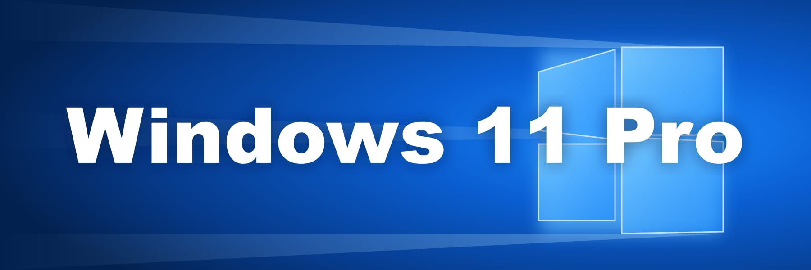
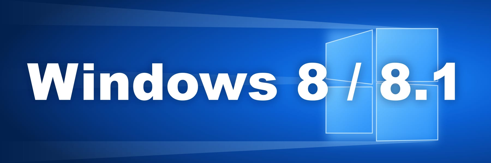

Instrucțiuni Windows

Windows 11 Pro Windows 11 Home Windows 10 Pro Windows 10 Home Erori Comune Windows
Windows 8 / 8.1 Windows 7 Windows Server Windows Server RDS CAL
Windows 11 Pro Windows 11 Home Windows 10 Pro Windows 10 Home Erori Comune Windows
Windows 8 / 8.1 Windows 7 Windows Server Windows Server RDS CAL